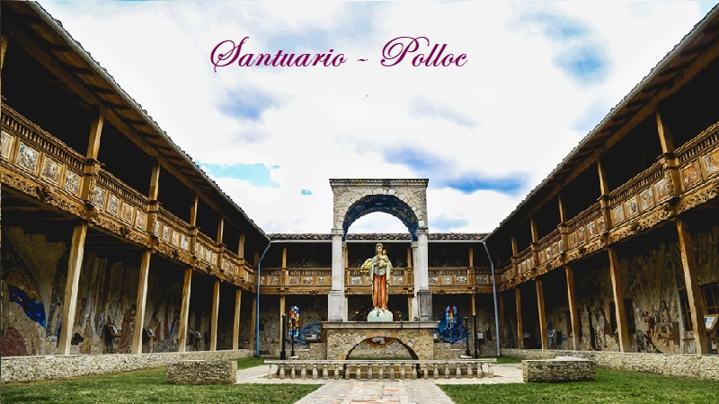
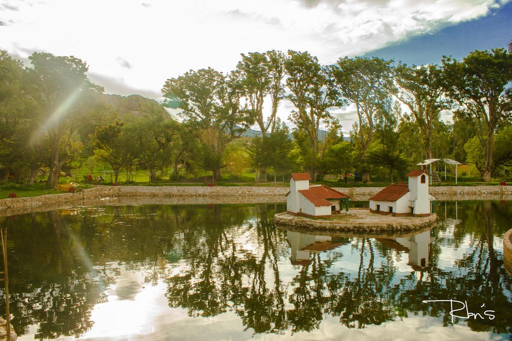

ATRACTIVOS FUERA DE LA CIUDAD
LAGUNA SAN NICOLÁS
Laguna de San Nicolás es una lago peruano situado en el Cajamarca. Tiene una extensión de 2 km de largo y de ancho 1.7 km.

SANTUARIO DE POLLOC
A 34 km de Cajamarca. Polloc deslumbra por el verdor de sus campos. En ella se construyó el santuario con arquitectura italiana.
BAÑOS DEL INCA
Ubicado a 6 km de Cajamarca. Son aguas termales de temperaturas superiores a 70ºC. Y histórico por los posos del Inca.
CATARATAS DE LLACANORA
Ubicado a 13 km. de la ciudad de Cajamarca. La catarata Macho mide un aproximado de 30 metros de altura con permanente caída de agua. La catarate Hembra tiene un aproximado de 15 a 20 metros de altura, conserva el paisaje natural.
VENTANILLAS DE COMBAYO
Las Ventanillas de Combayo es un sitio arqueológico peruano situado en el distrito de La Encañada a 35 km de la ciudad de Cajamarca.

HACIENDA LA COLLPA
Ubicada a 11 km. De la ciudad de Cajamarca, dedicada a la crianza de ganado vacuno y lanar, presenta un entorno paisajista de áreas verdes.